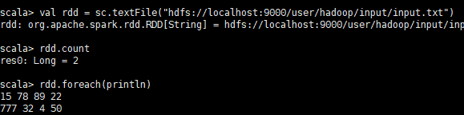
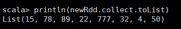
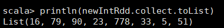

RDD(Resilient Distributed Dataset)即弹性分布式数据集。
RDD是Spark的核心，在Spark中，对数据的所有操作不外乎创建RDD、转化已有RDD以及调用RDD操作进行求值。而在这一切的背后，Spark会自动将RDD中的数据分发到集群上，并将操作并行化执行。
1 RDD的创建
创建RDD有两种方式，一种为读取外部数据集，Spark从外部数据集中读取数据一文中提到的各种方式都属于此种；另一种较为简单，直接调用parallelize()方法对一个集合进行并行化即可，如下：1
val rdd = sc.parallelize(List("spark","hello spark"))
即用此List创建了一个rdd，打印输出此rdd：1
2
3scala> rdd.collect().foreach(println)
spark
hello spark
2 RDD的转化操作
RDD的转化操作即为将1个或多个RDD转化成一个新的RDD，常见操作有：
- map():将函数应用于RDD中的每个元素，将返回值构成新的RDD
- flatMap():将函数应用于RDD中的每个元素，将返回的迭代器的所有内容构成新的RDD。通常用来切分单词。
- filter():返回一个由通过传给filter()的函数的元素组成的RDD（即起筛选作用）
我们选取Spark从外部数据集中读取数据一文中从HDFS中取出的RDD进行举例说明：

如图，从HDFS中读取的文本文件是按行存储在rdd中的，即一行为rdd的一个元素。
现在我们要将此rdd中的所有数字都存成元素以便后续操作，即1个元素变为多个元素则应使用flatMap()方法：
1 | val newRdd = rdd.flatMap(x=>x.split(" ")) |
然后输出：

可以看出，newRdd有8个元素。
然后用map()将每个元素转成int类型的并加1：
1 | val newIntRdd = newRdd.map(x=>x.toInt).map(x=>x+1) |
打印输出：

再举一个关于filter()的例子，假如我们要找出上述的所有奇数，代码如下：1
val oddNumRdd = newIntRdd.filter(x=>x%2==1)
（下文将对此oddNumRdd的操作进行举例说明）
3 RDD的行动操作
RDD的行动操作即对RDD进行实际的计算，并将结果打印输出或保存到外部存储系统中，常见操作有：
- collect():返回RDD中的所有元素
- count():返回RDD中的元素个数
- take(n):返回RDD中前n个元素
- reduce(func):并行整合RDD中所有数据（例如sum）
- foreach(func):让RDD中的每个元素使用func
collect()、count()和take()较为简单，举例如下：1
2
3
4
5
6
7
8scala> oddNumRdd.collect()
res3: Array[Int] = Array(79, 23, 33, 5, 51)
scala> oddNumRdd.count()
res4: Long = 5
scala> oddNumRdd.take(3)
res5: Array[Int] = Array(79, 23, 33)
注：需要说明的是，collect()会将RDD中的所有元素都存放在内存中，所以不适合大规模数据集。
上文已多次用过foreach(println)，即对RDD中的每个元素都进行打印输出操作。
reduce()经常用来求和，如：1
2oddNumRdd.reduce((x,y)=>x+y)
res6: Int = 191
4 参考资料
[1]Karau,H.&A.Konwinski.Spark快速大数据分析[M].王道远译.北京:人民邮电出版社.2015-09:30-37